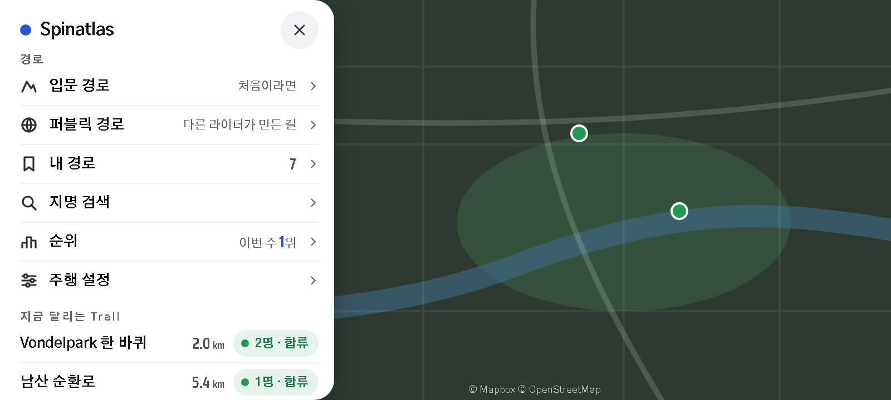
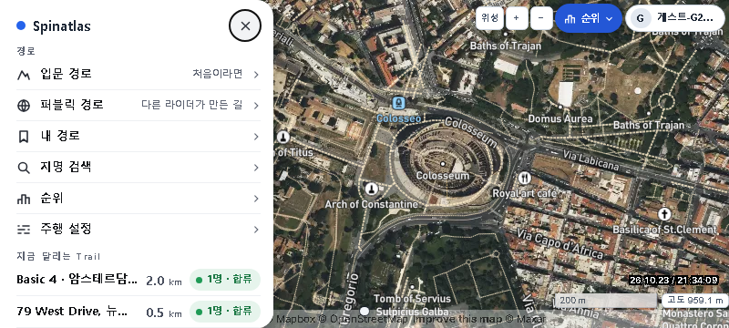
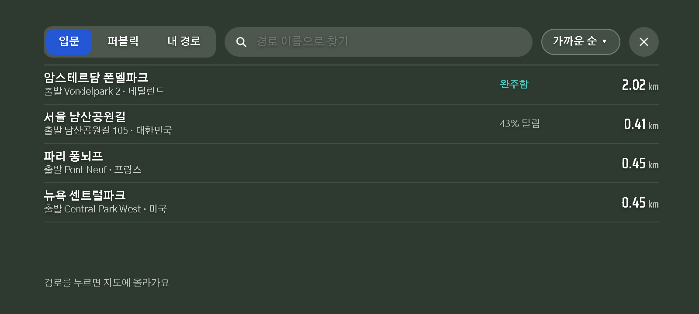
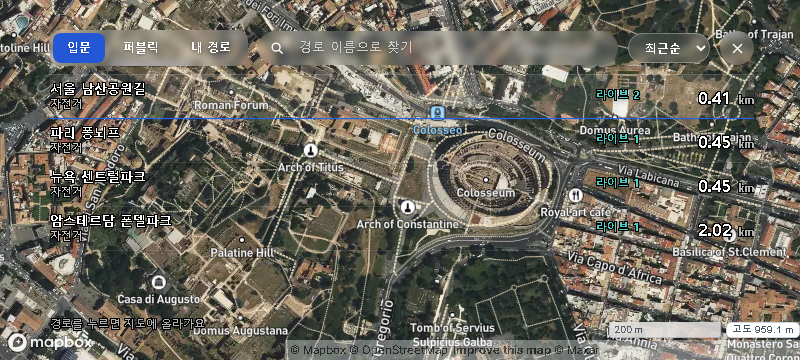
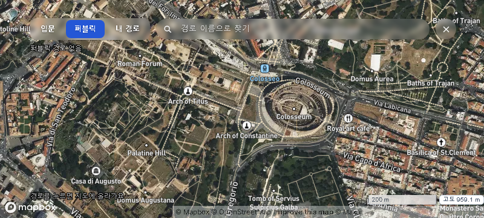
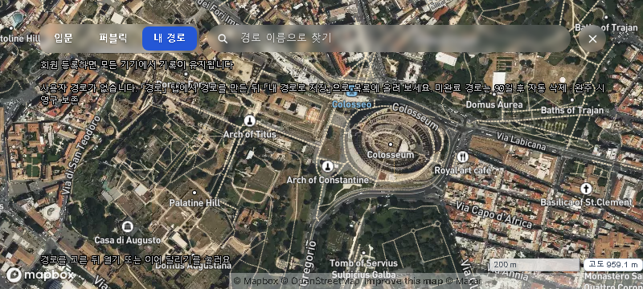

후속 변경: Chief 지시에 따라 경로 목록을 흰 불투명 패널로 보완했습니다. 아래 투명 목록은 당시 기록입니다. 최신 변경 전후 비교 보기
Spinatlas · MENU + 경로 목록
800×360 폰 가로 기준. 왼쪽은 승인된 시안, 오른쪽은 변경한 제품 화면입니다. 시안 PNG는 2배 크기여서 같은 비율로 표시합니다.
MENU
시안 06
실제 App
300px 흰 메뉴, 경로 3행과 검색·순위·설정 3행, 선 아이콘, 실제 Trail의 거리와 합류 버튼을 적용했습니다. 내 경로 개수·순위·Trail 내용은 데이터에 따라 달라집니다.
경로 목록
시안 07
실제 App
740×324 투명 목록, 출처·검색·정렬·닫기 한 줄, 44px 목록행과 오른쪽 거리 열을 적용했습니다. 긴 이름은 행을 늘려 읽습니다. 위성지도 위에서는 글자 윤곽선으로 대비를 보강했습니다.
시안과 다른 점: 기존 정렬인 최근순·거리순·이름순을 유지합니다. 가까운 순은 지리 정렬 기능이 없습니다. 실제 출발 주소가 없는 행에 주소를 만들지 않았고, 실제 프로필·등록자 등의 정보를 표시합니다. 입문·퍼블릭 목록에는 개인 완주/진행 데이터가 없으므로 해당 상태를 꾸며 넣지 않습니다.
퍼블릭 · 내 경로
퍼블릭
내 경로
내 경로는 기존 필터·선택 후 관리 도구·이어달리기를 유지합니다. 메모리 예시 화면에서 데이터가 있는 상태를 볼 수 있습니다. 실제 App 캡처의 Guest·목록은 에뮬레이터 안의 데이터이며 운영 데이터가 아닙니다.
감리 기록 · 컴포넌트 프리뷰 열기